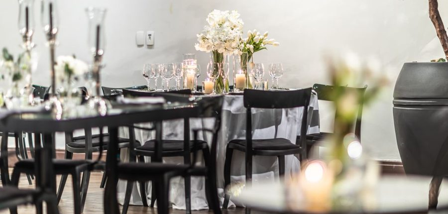

Your name on the list.
How to get invited to restaurant openings and launches as a local creator
Opening lists are not random and they are not only for big accounts. Owners build them from creators they can find, whose audience is local, and who have a record of showing up and posting on time. Here is how those lists get built, and how to be on one before the doors open.
By Jeff, Founder, Magpie · November 15, 2026 · Magpie Learn hub
You get invited to restaurant openings by being visible, local and reliable before the opening happens. Post about the neighborhood, keep your city and contact details easy to find, deliver past visits on time, and join Magpie so owners building an opening list can find and book you fast.
- Opening lists are built weeks ahead from findable local creators with a visible record, not from last minute follower counts.
- Owners invite local creators because neighbors trust neighbors, and an opening needs local word of mouth in its first days.
- Posting about the neighborhood before a launch, delivering on time, and following up after the event are what get you invited again.
How does a restaurant opening list actually get built?
Weeks before opening day, someone on the restaurant team, often the owner, a manager or a local publicist, starts a list. They add creators they already know, creators their staff follow, creators other businesses recommend, and creators they find by searching their city and topic. On Magpie, that search is the roster itself: local reach shown on the profile, tier set by stacked followers, and a Momentum record from on-time posts. Every name on the list passed the same quiet test: local, findable, and likely to actually post.
Timing is the part creators miss. By opening week the list is usually full and the team is drowning in training, permits and deliveries. The creators who get invited did their work a month earlier, when they became visible in the neighborhood feed and easy to contact. If you only appear once the opening is announced, you are asking a slammed team to do research it has no time for. Be findable early, and the invitation does the work for you. Hampton Roads has a steady rhythm of openings, and local creators can follow their market on the Hampton Roads page.
Why do owners invite local creators at all?
An opening lives or dies on its first two weeks of word of mouth. Ads announce, but neighbors convince. When a local creator posts a real first meal, followers read it as a tip from someone whose taste they know, in a place they can actually try this weekend. A room full of local creators on a preview night also gives the kitchen a friendly full house to practice on, gives the owner content to reshare for days, and seeds the first reviews and photos that later guests will search for.
Owners are not buying your follower count. They are buying a concentrated burst of local trust at the exact moment it is worth most. That is why a Neighbors tier creator, 500 to 2,000 followers stacked across platforms, with a deeply local audience can be a better opening invite than a large creator whose audience is mostly elsewhere. For the business side of planning such a night, see how to run a creator night at a restaurant. The creators businesses reach for first are profiled in types of local creators businesses book first.
Founding creators go first. Magpie is open from 500 total followers, stacked across all your platforms, and it is free for creators, always. Founding creators see every offer first when their market opens.
How do you get on the list before a launch?
Do three things steadily. First, post about the neighborhood, not only about restaurants that comp you. The bakery, the market, the street festival, the new mural: a feed that loves a place reads as rooted, and opening teams look for rooted creators. Second, be findable in ten seconds: city and topic in your bio, a working contact route, and a complete Magpie profile with your neighborhood and every platform connected, so your stacked tier and local reach are accurate. Third, build a delivery record anyone can check: past visits posted within 48 hours, disclosed, and kept live.
Then add one light human touch. Follow the coming restaurant early, comment like a future regular, and share real anticipation when it posts its progress. If you send a note, keep it to a few lines: who you are, that your audience is local, and that you would love to post honestly about a first visit. No pressure, no promises of a glowing review, and no demands for a plus one army. Owners invite people who feel like neighbors first and media second.
- ✓Post the neighborhood: regular posts about your area, so your feed proves you are rooted, not just deal hunting
- ✓Be findable fast: city and topic in your bio, a clear contact route, and a complete Magpie profile
- ✓Show a delivery record: past posts on time, disclosed and kept live, with Momentum building on Magpie
- ✓Engage early, lightly: follow the opening business early and act like the future regular you are
What should you do at the opening itself?
Arrive on time, check in warmly, and remember the staff are having one of the biggest nights of their year. Be easy: take the seat offered, order or accept what the kitchen wants to show, and get your shots without blocking service or turning other guests into props. Ask one or two real questions about the story of the place, the chef, the dish names, the neighborhood roots, because those details make your post useful instead of generic. Eat the food while it is hot. Content matters, but so does being a good guest in a room you hope to be invited back to.
Know what was agreed. An opening invite is usually a comped experience, and on Magpie terms a Standard Visit is 1 post or reel plus 1 story that shares the post. If the invite came outside Magpie, confirm the expectation politely before or at the event: what post, by when, and any tag or location the team needs. Clear beats awkward, every time.
What do you do after, so the next invitation comes?
Post within 48 hours, disclose the comp clearly with a label such as #gifted or a Paid Partnership tag, tag the restaurant and the location, and keep the post live for 30 or more days. Write like a neighbor recommending a place, with specifics: what to order, when to go, who to bring. Then send one short thank you with the live link to whoever invited you. That single message, with proof attached, is what moves your name from the opening list to the permanent list.
Stay a regular if you loved it. Go back on your own dime when you can, post the new seasonal dish, and think of the owner at launch moments across the year. Openings are one night, but restaurants launch menus, patios, brunches and anniversaries all year, and the creators invited to those are the ones who delivered on opening night and never became strangers. Magpie is open from 500 total followers and free for creators always, and founding creators see every offer first when their market opens, which includes the launches forming now in 45 markets. Build the record, and the invitations start finding you.
Quick answers on opening invitations
How do restaurants decide which creators to invite to an opening?
Owners and their teams build a list from creators they can find easily, whose audience is clearly local, and who post reliably about food and the neighborhood. A complete profile, a local feed and an on-time record matter more than a big follower count.
Do I need to pitch a restaurant before it opens?
A light touch helps. Follow the restaurant early, engage like a future regular, and make sure your city, topic and contact route are easy to find. One short, friendly note offering a visit post is fine. Repeated pitching before opening day is not.
What should I do after an opening event to get invited again?
Post on time, within 48 hours as the standard, disclose clearly, tag and thank the team, and send one short follow-up with the live link. Owners remember creators who delivered cleanly and made the night easy.
Ready to claim your founding spot?
Founding creators are joining now in 45 markets, and roster order is set by sign-up. Every application gets a decision or a clear status within 2 business days.
Sign-ups live in the Magpie app
Create your account and build your founding profile in a few minutes: your market and home city, your handles, your photo and what you post about. Magpie is free for creators. Always. Businesses pay the platform. You never pay to join, to list, or to get booked.
Create my founding creator account
Already signed up? Sign in at app.magpielocal.com